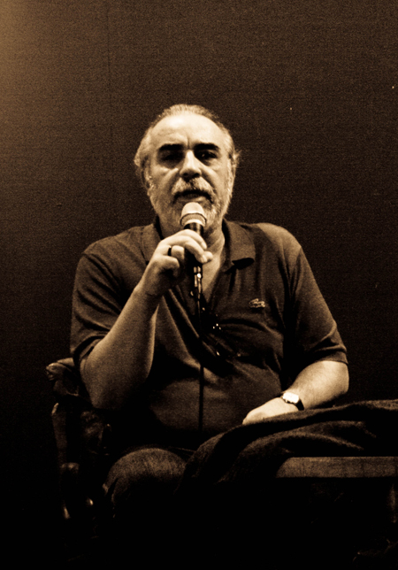

Байки от Claudio Danadinho
До грандиозного семинара Сензалы в Белграде осенью 2009 года, я и знать не знала, кто такой mestre Claudio Danadinho. Поэтому когда увидела одиноко сидящего в сторонке седого дяденьку в обычной одежде, не стала падать ниц прямо на месте. Хотя что-то все равно заставило обернуться и подумать: «Надо же, какой колоритный дядька! Прям как какой-то старый местре…» Уже потом, когда я видела, как весь цвет Сензалы без конца фотографируется с ним и снимает его на видео, до меня дошло, что это легенда.
Впрочем, эта легенда до сих пор имеет веселый бразильский нрав и с удовольствием травит байки на лекциях.
Байка про гамак. От лица истинного бразильца.
Claudio Danadinho: «The culture of Brazil is a culture of a swing, of a bed!»

Мой отец зачал меня в гамаке, моя мать родила меня там же. Когда я был грудным ребенком, меня укачивали в гамаке, чтобы я заснул. Когда я подрос, я был ужасно ленивым подростком, качался в гамаке весь день до наступления ночи. Потом я начал встречаться с девушками, и мне вообще не хотелось вылезать из гамака, а если и приходилось это делать – то лишь для того, чтобы найти новую девчонку и вместе с ней снова улечься в гамак. Потом я нашел работу и работал весь день, думая только о том, как приду домой и заберусь в любимый гамак вместе с женой. Когда я постарел, мне хотелось все дни покачиваться в гамаке, поглядывая на девчонок, гуляющих по улице. А потом я заболел, и не мог встать, даже если хотел. А потом я умер, и меня завернули в мой гамак и так положили в землю. Так что вся жизнь бразильца крепко связана с его гамаком. У индусов была Камасутра, по которой они учились, у нас же был гамак, чтобы учить нас.
Хорошо, что Местре не из тех, кто всю жизнь валяется в гамаке — в 60-х годах он уехал во Францию, выучился там и стал архитектором с ученой степенью.
А вот про то, что сказка ложь, да в ней — намек: